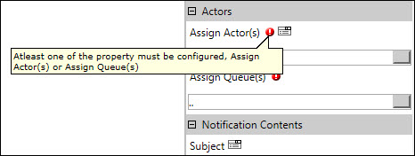
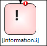

No
You need to set some properties of all AVEVA Work Tasks Activities as they are essential for the execution of the activities. These mandatory properties can be identified by the red icon with a white exclamation mark superimposed on the red circle that is placed next to the property labels.

Mandatory properties
In the above example, you can see two mandatory properties for the Checklist activity. The first property – Questions – helps configure the functionality of the activity. The second property that is visible – Assign Actor(s) – determines the actors to whom the activity will be assigned. Both these properties cannot be left empty. To ensure that users are aware of the importance of setting the mandatory properties, a message stating that the value cannot be left empty is displayed on placing the mouse over the mandatory icon. This icon is removed once the mandatory properties have been set to some value.
The mandatory icon is also superimposed on the outline of the Activity icon when it is added, indicating that its properties have not been set. The icon is removed after all mandatory properties have been set for this activity.

Checklist Activity indicating that properties have not been set.